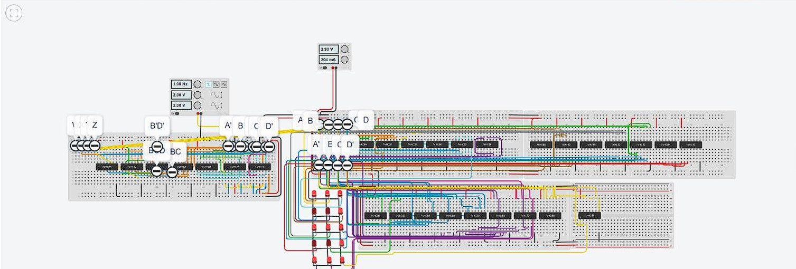

Project Overview
This project focuses on designing a logic circuit using basic logic gates and applying knowledge from digital logic design concepts. The project was conducted in two main parts, with simulations done using TinkerCAD.
Part 1: Displaying Digits Using Karnaugh Maps
- Created truth tables, Boolean algebra expressions, and Karnaugh maps to display numbers on a 3x5 LED display.
- Simplified Boolean expressions using Karnaugh maps to optimize the circuit's design.
- Simulated the design in TinkerCAD, ensuring digits 0-9 were displayed correctly.
Part 2: Sequencing and Timing with Flip-Flops
- Developed a sequence of digits based on a state diagram using flip-flops to control timing.
- Integrated additional flip-flops to make the digits flash at specific intervals, then remain illuminated.
- Designed and simulated the sequence using TinkerCAD, demonstrating the functionality of the system.
Key Achievements
- Designed a functional 3x5 LED pixel display using Boolean logic and Karnaugh maps.
- Successfully implemented timing control and sequencing using flip-flops.
- Simulated and tested the system in TinkerCAD to ensure correct outputs and behavior.
Project Images
Here is an image related to the project:

Conclusion
The Logic Circuits project demonstrated the successful application of digital logic design principles. The use of Karnaugh maps, flip-flops, and logic gates enabled the creation of a functional, optimized system, enhancing skills in circuit design and simulation.